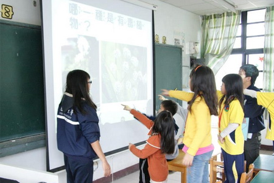
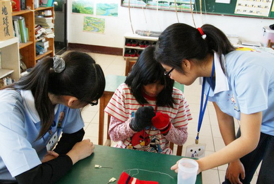
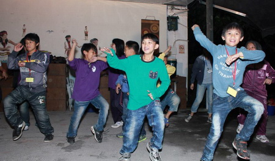
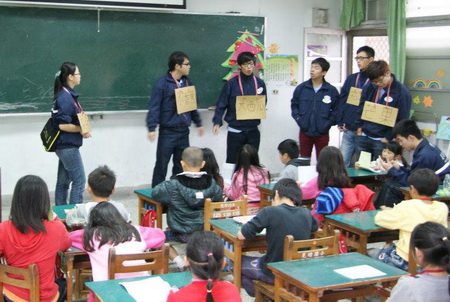
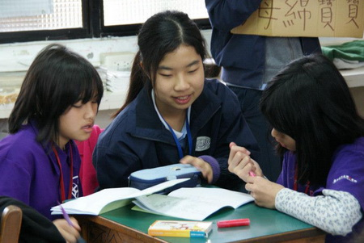

About Us
慈濟大學醫學系看見晴天醫療服務隊
看見晴天醫療服務隊（簡稱｢見晴服務隊｣），緣起民國95年，由系上老師與學生們共同創建，希望不僅能使學生從服務中學習，更能深入山區部落中，為偏遠花東居民的身心健康盡一份心力。
多年來在萬榮鄉見晴社區，主要服務對象以見晴國小的小學生為主，透過學期中及寒假三、四天的課程及活動，使小朋友能接觸更多元的事物，期待能找到人生的方向。除了透過衛生教育將健康知識帶給社區居民，也藉著與小朋友的深入互動，發現家庭及社區的問題，進而思考解決方法。在民國98年更加入了友系 ── 物理治療系，使得原本有趣的活動變得更加多元。
讓服務隊能繼續經營下去的不只是同學的熱愛服務的心，小朋友天真無邪的笑容更是讓每次的離別格外不捨，在活動結束大家要離開見晴國小時，小朋友總是會說：「大哥哥、大姊姊你們下次一定還要再來喔！」期待未來哪怕是一點點的改變，只要能讓他們留下美好的童年才是最重要的，就讓我們繼續看見晴天吧！
隊長：Med104 曾昶深
副隊長：Med105 楊汶媛
副隊長：Med106 林之婷
衛生教育
健康的生活習慣及衛教觀念應從小養成，希望藉由我們在學校中獲得的知識，教導小朋友正確的衛生習慣及疾病觀念。此外也希望小朋友在得到正確的衛生習慣及疾病觀念後，能將這些知識帶回家中，進而影響其家庭及部落。

關懷平等教育
小朋友對於性別間的認知尚未成熟，希望能建立適當的性別觀念，並給予正確的性教育知識，減少未婚懷孕或性侵害的發生。
下午的老人院活動中，藉由此課程先給予小朋友關懷弱勢族群那份同理心，不只對家中長輩尊重，也能對身邊需要幫助的人伸出援手，將服務的種子深植小朋友心中。
帶領小朋友進行特殊教育宣導體驗活動，透過視障、聽障、肢障等體驗活動，讓小朋友能體驗身心障礙者之生活方式，以瞭解身心障礙者之不便，並透過特殊教育宣導體驗活動（如去教養院服務病友），進而學習如何對待身心障礙者並給予適當之協助。
培養「尊重生命」與「自我省思」之能力，增進小朋友對特殊障礙者之瞭解、同理、接納及融合，進而提升其對特殊障礙者的支持與關懷，營造出友善校園。
下午的老人院活動中，藉由此課程先給予小朋友關懷弱勢族群那份同理心，不只對家中長輩尊重，也能對身邊需要幫助的人伸出援手，將服務的種子深植小朋友心中。
帶領小朋友進行特殊教育宣導體驗活動，透過視障、聽障、肢障等體驗活動，讓小朋友能體驗身心障礙者之生活方式，以瞭解身心障礙者之不便，並透過特殊教育宣導體驗活動（如去教養院服務病友），進而學習如何對待身心障礙者並給予適當之協助。
培養「尊重生命」與「自我省思」之能力，增進小朋友對特殊障礙者之瞭解、同理、接納及融合，進而提升其對特殊障礙者的支持與關懷，營造出友善校園。

營歌舞蹈教學
古人說「一日之計始於晨」，四天的營期總希望小朋友能帶著滿滿的精神、充沛的體力，健康地來、快樂地回家；因此，凡是出隊的早上都會有營歌教學的時間，在舒展筋骨後方展開一天的行程。
每年寒假，我們都會挑選時下流行的音樂，配合正向光明的歌詞，編排新一年的早操，並在連續三天的早晨教小朋友們新舞步。多年下來，學習一套新的早操成為我們和小朋友的默契與樂趣。
每年寒假，我們都會挑選時下流行的音樂，配合正向光明的歌詞，編排新一年的早操，並在連續三天的早晨教小朋友們新舞步。多年下來，學習一套新的早操成為我們和小朋友的默契與樂趣。

社區地圖
我們跟著小朋友一起行動，藉著小朋友們的引導，了解、認識社區朋友平常嬉戲、休閒、與集會的場所。
除了與居民親密接觸之外，亦可深入認識當地社區及文化。
繪本製作
藉由帶領小朋友閱讀繪本，增加小朋友對書本的喜好，進而提升閱讀風氣，培養良好的閱讀習慣。
並藉由故事內容，思考其中涵義。
目前規劃繪本故事內容為「職業面面觀」及「家庭與人際關係的提升」；這兩個主題在過去的出隊中都曾以不同的方式呈現、討論。有鑑於見晴師長反應家庭與人際關係的衝突在見晴社區中十分常見，我們希望可以用一些有趣的方式讓小朋友分享對這個議題認知與感覺，因此規劃繪本閱讀讓小朋友思考並畫下自己的想法，與大哥哥、大姊姊互相討論後，獲得寶貴的知識與經驗，並應用於生活中。
目前規劃繪本故事內容為「職業面面觀」及「家庭與人際關係的提升」；這兩個主題在過去的出隊中都曾以不同的方式呈現、討論。有鑑於見晴師長反應家庭與人際關係的衝突在見晴社區中十分常見，我們希望可以用一些有趣的方式讓小朋友分享對這個議題認知與感覺，因此規劃繪本閱讀讓小朋友思考並畫下自己的想法，與大哥哥、大姊姊互相討論後，獲得寶貴的知識與經驗，並應用於生活中。


家訪學習
衛生署每年都會公布國人的十大死因，同時發佈的還有各個地區的統計數據。與一般熟知的順序不同的是，花蓮的鄉間意外死亡與感染致命的人數相較北部都市來的更多。值得省思的是，原住民青年人口多到外地、工地掙錢，加上衛生習慣和營養來源不如上班族完善、充足，造成這樣的差別。
藉由深入社區的家訪，讓我們這群還在摸索學習的醫學生認識偏遠地區，經由親身探訪與觀察，搜集當地第一手資料，進而發掘在地社區問題，學習找出解決問題的方法。與當地居民的第一線接觸，不僅可以讓我們學習怎麼與人相處，也可以將我們平時在校所學的健康知識發揮在家庭衛教中，並適時地將免費健康檢查的資訊帶入社區，提供適時就醫的正確觀念。
為了讓需要的人能得到適切的關心，家訪戶除了以見晴國小的學生家優先外，更請學校主任、里長幫忙提供最需要協助的家庭名單。每年寒假訪視的家庭，在學期中都有後續的追蹤與定期訪視，讓關心與協助持續存在。
藉由深入社區的家訪，讓我們這群還在摸索學習的醫學生認識偏遠地區，經由親身探訪與觀察，搜集當地第一手資料，進而發掘在地社區問題，學習找出解決問題的方法。與當地居民的第一線接觸，不僅可以讓我們學習怎麼與人相處，也可以將我們平時在校所學的健康知識發揮在家庭衛教中，並適時地將免費健康檢查的資訊帶入社區，提供適時就醫的正確觀念。
為了讓需要的人能得到適切的關心，家訪戶除了以見晴國小的學生家優先外，更請學校主任、里長幫忙提供最需要協助的家庭名單。每年寒假訪視的家庭，在學期中都有後續的追蹤與定期訪視，讓關心與協助持續存在。